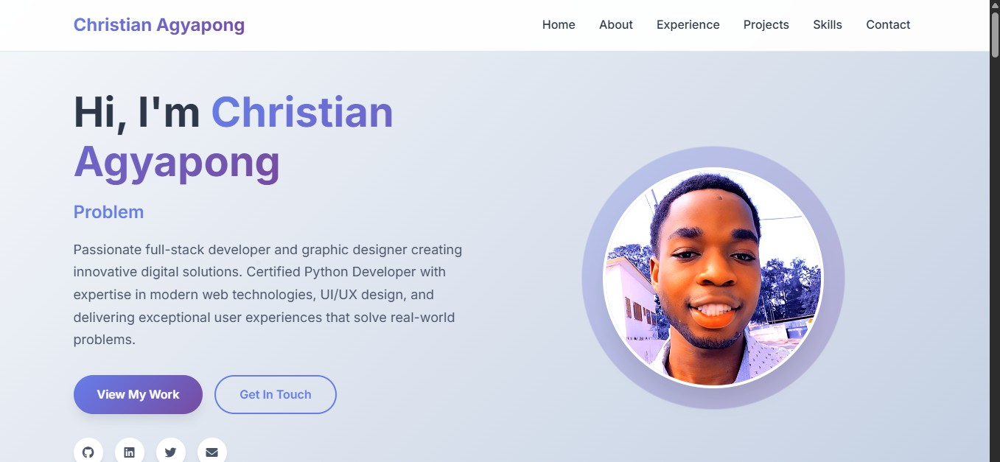
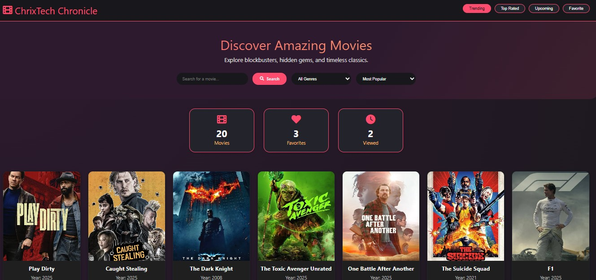
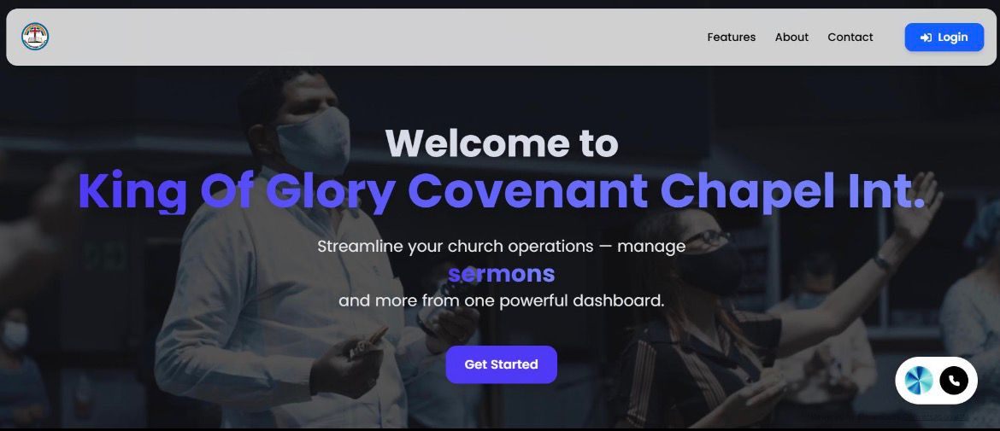

Exploring the digital realm through code, creativity, and cutting-edge technology. Each project represents a journey of problem-solving and innovation.
Navigate through my digital creations

A modern, responsive portfolio website showcasing professional skills and projects. Built with clean HTML5, CSS3, and JavaScript featuring smooth animations, interactive elements, and comprehensive project documentation system.
A comprehensive academic management platform featuring student portal access, staff administration, course management, and secure authentication for educational institutions.

A modern movie streaming and discovery platform featuring comprehensive movie catalog, trending content, favorites system, and elegant dark-themed interface with advanced search capabilities.

A comprehensive church management system streamlining operations for sermons, events, and member management. Features intuitive dashboard interface enabling church administrators to manage all aspects from one powerful platform.